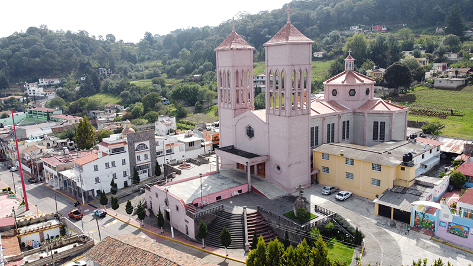
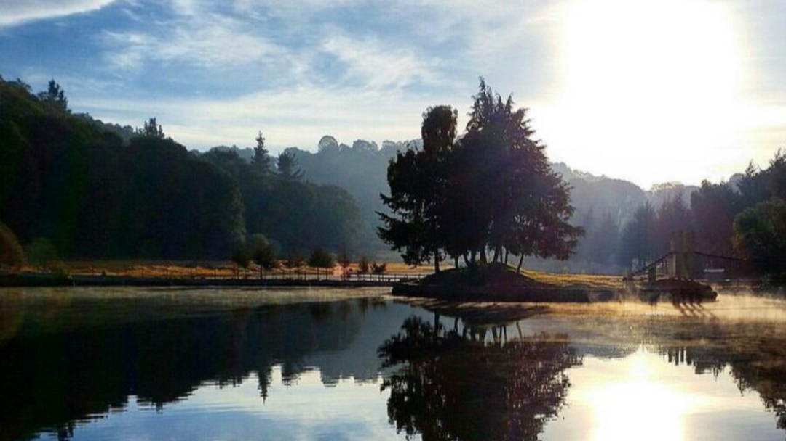

Y todo lo que hagan, háganlo con amor 1 Corintios 16:14
Con la bendicion de Dios, nuestros padres y padrinos
¡Nos casamos!
12
Noviembre 2022Padrinos de velación
Sr. Sergio de la Cruz Andres
Sra. Ma. Dolores Contreras Molina
Nuestros Padres
Sra. Irma Martínez Gonzaléz
Sr. Eduardo Téllez Miguel
Sra. Guadalupe Martínez Miguel
Ceremonia
La ceremonia religiosa tendra lugar en la Parroquia de San Andres Timilpan en punto de las 13:30 Hrs
C. Francisco I. Madero 43, 50500 San Andrés Timilpan, Méx.
Recepción
La recepcion del evento sera en Rancho el Rinconcito en un horario de 15:00 - 16:30 Hrs
C.P. 50540 Santiago Acuitzilapan, Méx.
La vida en una foto
Creemos firmemente que los recuerdos son lo único que de esta vida nos llevaremos, compartamos estas grandiosas memorias en las redes sociales con el hashtag ## VinePorqueSoyGorrasRJ
Código del evento
Regla infalible: Por ningun motivo debes acudir de blanco.
Vestimenta:Formal de preferencia (evita acudir de pans, shorts, playera, etc.).
Actitud:Acudir con toda la actitud dispuesto a darlo todo para el evento.
Niños:Si acudes con menores apoyanos en controlarlos por su integridad y dado a que no es un evento dirijido a infantes.
Medidas post Covid-19:
Recuerda que recien hemos alcanzado el punto de salida de la pandemia y por protocolo es necesario acudir con lo necesario (cubrebocas) para la ceremonia religiosa,
el lugar del evento sera un espacio abierto y podras estar como a ti mas te agrade.